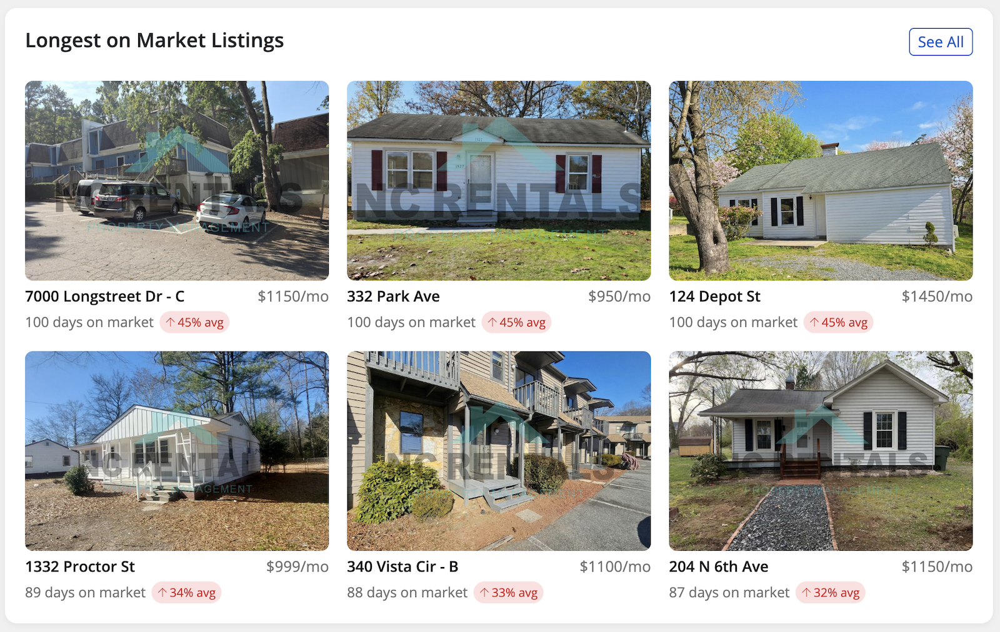
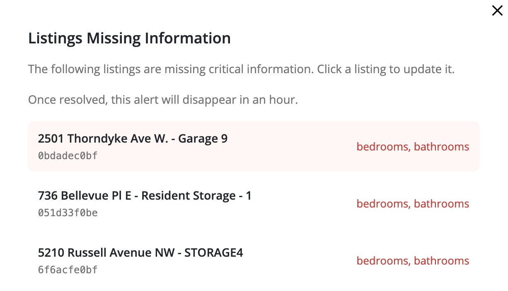
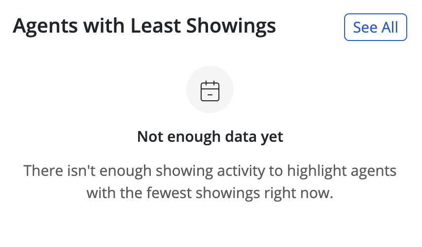

Dashboard Redesign
Context
The existing dashboard had evolved over time into a collection of metrics and widgets, but it didn’t effectively support day-to-day decision making. Users struggled to understand what required their attention, often ignoring the dashboard altogether and navigating directly to individual listings or other parts of the product.
This created a gap between available data and actual user action: the interface showed information, but didn't help users decide what to do next.

Goals
My goal was to redesign the dashboard so it could function as an action-oriented decision-making tool, helping users quickly understand:
- what needs attention
- where problems exist
- what actions to take next
The challenge was to simplify a data-heavy interface without losing important context, and to align the dashboard with real user workflows.

Approach
To better understand the problem, I analyzed product analytics, session recordings, and user behavior to see how the existing dashboard was being used in practice. This revealed that many elements were either ignored or misunderstood, and that users relied on alternative workflows to complete their tasks.
Using these insights, I reframed the dashboard around a core job to be done:
When managing multiple listings, users need to quickly identify what requires attention so they can act efficiently.
I focused on transforming the dashboard from a passive overview into an actionable interface by:
- prioritizing key signals over raw data
- grouping information around user questions rather than system structure
- reducing visual noise and simplifying hierarchy
I iterated on several design directions, validating them with feedback from stakeholders and internal teams, and refined the interface to ensure it supported quick scanning and decision-making.


Outcomes
The redesigned dashboard made it easier for users to identify critical issues and understand next steps. By shifting the focus from data display to actionable insights, the new interface helped users act faster and with more confidence.
It also improved engagement with dashboard content and reduced reliance on indirect workflows, making the dashboard a more central part of the product experience.